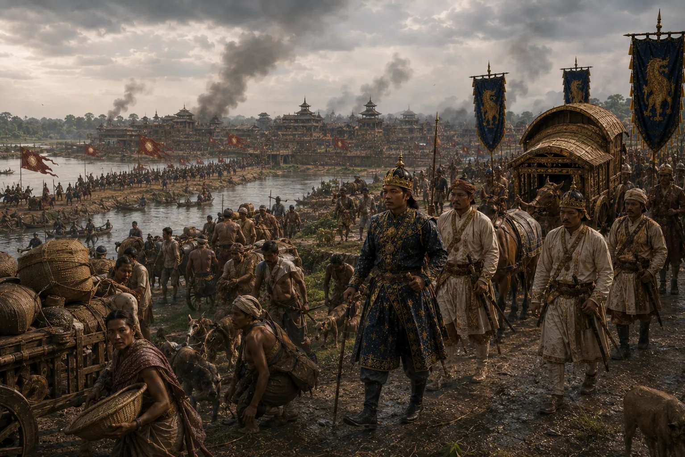

Chilarai's Invasion of Garhgaon
1562–1563 · Swarganarayan’s kingdom

Koch king Naranarayan and general Chilarai launch a blitzkrieg; Ahoms execute a tactical retreat into the hills of Namrup.
Sources have not yet been catalogued for this record.
People: Chilarai (Sukladhwaj), Nara Narayan, Sukhaamphaa (Khora Roja)
Open this scene in the interactive archive · Follow this event on MAP